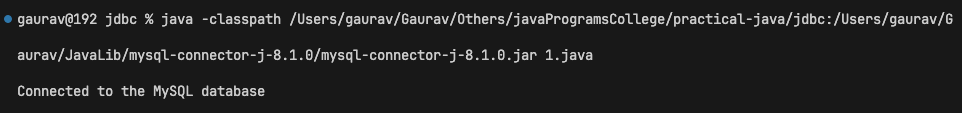
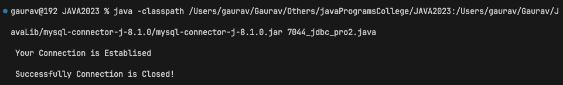
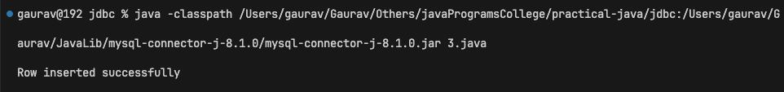
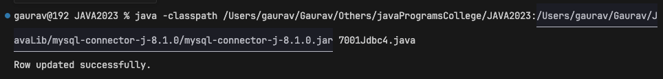
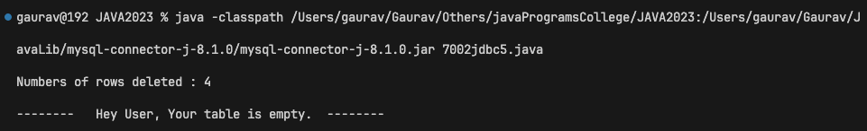
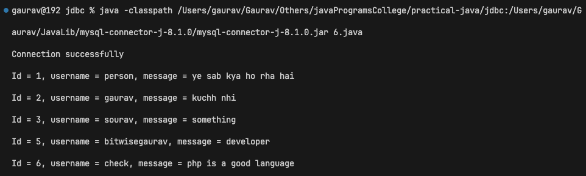
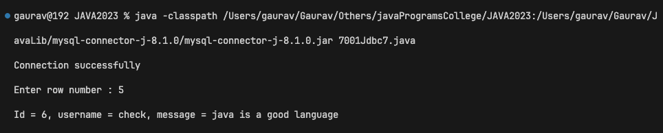
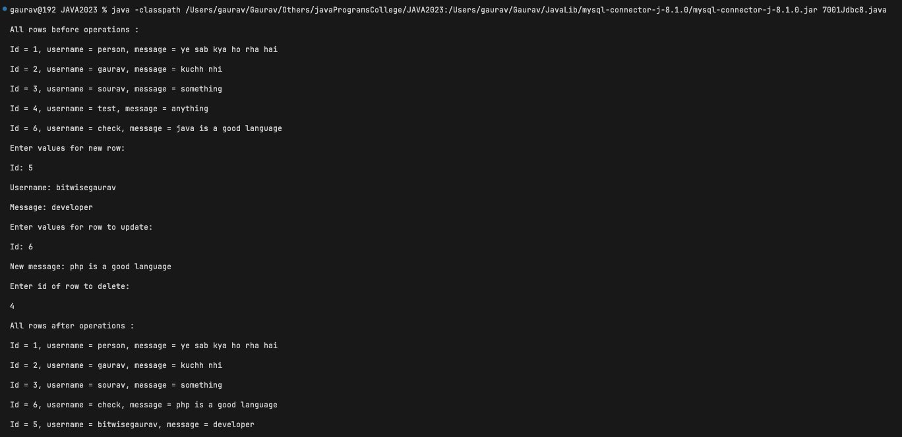
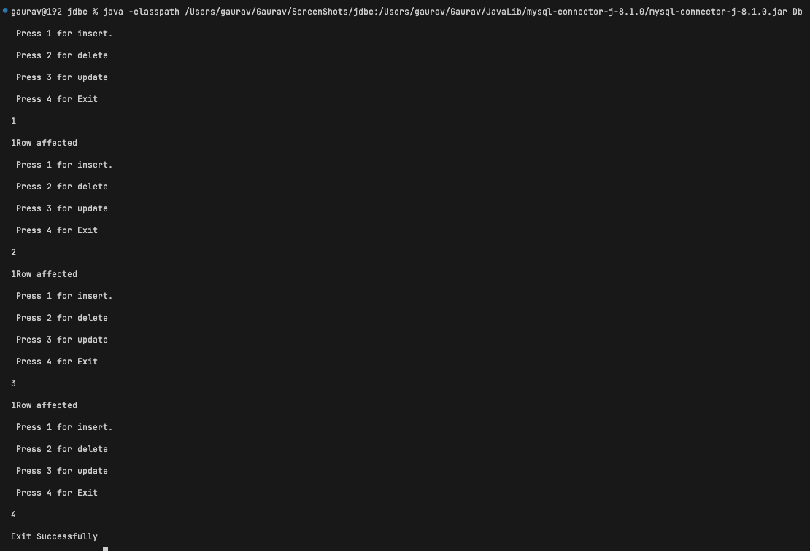

1 :- Create the connection with MySQL Database and manage the driver.
.
import java.sql.Connection;
import java.sql.DriverManager;
import java.sql.SQLException;
class MySQLConnectionExample {
public static void main(String[] args) {
String url = "jdbc:mysql://localhost:3306/test";
String user = "root";
String password = "";
try {
Class.forName("com.mysql.cj.jdbc.Driver");
Connection connection = DriverManager.getConnection(url, user, password);
if (connection != null) {
System.out.println("Connected to the MySQL database");
connection.close();
}
} catch (ClassNotFoundException e) {
System.err.println("MySQL JDBC driver not found");
} catch (SQLException e) {
System.err.println("Connection to the database failed: " + e.getMessage());
}
}
}
Output :-

2 :- Create the table in the database from Java API.
//Program name : Create the table in the database from Java API.
// java -cp "D:\44\javaPrograms\jd\JDBC;C:\mysql-connector-j-8.2.0.jar" DataDefination
class DataDefination {
public static void main(String[] args) {
try {
Class.forName("com.mysql.cj.jdbc.Driver");
java.sql.Connection connect = java.sql.DriverManager.getConnection("jdbc:mysql://localhost:3306/test",
"root", "");
if (connect.isClosed()) {
System.out.println(" Your Connection is Closed!");
System.exit(0);
}
// ------------------------------------------------------
System.out.println(" Your Connection is Establised ");
java.sql.Statement state = connect.createStatement();
String create_table_query = "CREATE Table mytable3 (id int)";
Boolean result = state.execute(create_table_query);
if (result) {
System.out.println("Table created!");
}
// -----------------------------------------------------
connect.close();
if (connect.isClosed())
System.out.println(" Successfully Connection is Closed!");
} catch (ClassNotFoundException error) {
System.out.print(error.getMessage());
} catch (java.sql.SQLException error) {
System.out.print(error.getMessage());
}
}
}
Output :-

3 :- Insert the row in the table in the database from Java API.
import java.sql.*;
class employee{
public static void main(String s[]){
try{
Class.forName("com.mysql.cj.jdbc.Driver");
Connection con =DriverManager.getConnection("jdbc:mysql://localhost:3306/mydb","root","");
Statement s1=con.createStatement();
int x= s1.executeUpdate("insert into users values(8,'test','something@gmail.com')");
if(x==1){
System.out.println("Row inserted successfully");}
}catch(ClassNotFoundException e){System.out.println(e);}
catch(SQLException e){System.out.println(e);}
}}
Output :-

4 :- Update the row in the table in the database from Java API.
import java.sql.Connection;
import java.sql.DriverManager;
import java.sql.SQLException;
import java.sql.Statement;
class DatabaseUpdateWithStatement {
public static void main(String[] args) {
String url = "jdbc:mysql://localhost:3306/mydb";
String username = "root";
String password = "";
// SQL update statement
String updateSql = "UPDATE users SET id = 2 WHERE id = 5";
try {
Connection connection = DriverManager.getConnection(url, username, password);
Statement statement = connection.createStatement();
int rowsAffected = statement.executeUpdate(updateSql);
if (rowsAffected > 0) {
System.out.println("Row updated successfully.");
} else {
System.out.println("No rows updated.");
}
} catch (SQLException e) {
e.printStackTrace();
}
}
}
Output :-

5 :- Delete the row in the table in the database from Java API.
// Delete the row in the table in the database from Java API.
import java.sql.Connection;
import java.sql.DriverManager;
import java.sql.Statement;
import java.sql.SQLException;
import java.sql.ResultSet;
class Main {
private static Connection con;
private static int rows_affected;
public static void main(String[] args) {
try{
Class.forName("com.mysql.cj.jdbc.Driver");
con = DriverManager.getConnection("jdbc:mysql://localhost:3306/test","root","");
Statement st = con.createStatement(ResultSet.TYPE_FORWARD_ONLY,ResultSet.CONCUR_UPDATABLE);
String sql = "DELETE FROM students";
rows_affected = st.executeUpdate(sql);
System.out.println("Numbers of rows deleted : "+rows_affected);
//telling user that he is deleting from an empty table.
ResultSet rs = st.executeQuery("SELECT * FROM students");
if(!rs.next())
System.out.println("-------- Hey User, Your table is empty. --------");
}
catch(ClassNotFoundException c)
{
c.printStackTrace();
}
catch(SQLException s)
{
s.printStackTrace();
}
if(con!=null) {
try {
con.close();
}
catch(SQLException sql_e) {
sql_e.printStackTrace();
}
}
}
}
Output :-

6 :- Select multiple rows from the database table in Java API and show the result on the screen.
import java.sql.*;
import java.util.Scanner;
class DatabaseManager {
public static void main(String[] args) throws ClassNotFoundException {
Class.forName("com.mysql.cj.jdbc.Driver");
try {
Connection connection = DriverManager.getConnection("jdbc:mysql://localhost:3306/chatTest", "root", "");
System.out.println("Connection successfully");
Statement st = connection.createStatement(ResultSet.TYPE_SCROLL_SENSITIVE, ResultSet.CONCUR_READ_ONLY);
ResultSet result = st.executeQuery("select * from chats");
try{
while(result.next()){
System.out.println("Id = "+result.getInt("id")+ ", username = " + result.getString("username") + ", message = " + result.getString("message"));
}
} catch(NumberFormatException e){
System.out.println("Exception: " + e.getMessage());
}
connection.close();
} catch (SQLException e) {
System.out.println("SQL Exception: " + e.getMessage());
} catch (Exception e){
System.out.println("Exception: " + e.getMessage());
}
}
Output :-

7 :- Create a Scrollable Readonly Resultset and ask the row number from the user and display that row on the screen.
import java.sql.*;
import java.util.Scanner;
class DatabaseManager {
public static void main(String[] args) throws ClassNotFoundException {
Class.forName("com.mysql.cj.jdbc.Driver");
try {
Connection connection = DriverManager.getConnection("jdbc:mysql://localhost:3306/chatTest", "root", "");
System.out.println("Connection successfully");
Statement st = connection.createStatement(ResultSet.TYPE_SCROLL_SENSITIVE, ResultSet.CONCUR_READ_ONLY);
ResultSet result = st.executeQuery("select * from chats");
try{
Scanner scanner = new Scanner(System.in);
System.out.print("Enter row number : ");
int row = scanner.nextInt();
result.absolute(row);
System.out.println("Id = "+result.getInt("id")+ ", username = " + result.getString("username") + ", message = " + result.getString("message"));
scanner.close();
} catch(NumberFormatException e){
System.out.println("Exception: " + e.getMessage());
}
connection.close();
} catch (SQLException e) {
System.out.println("SQL Exception: " + e.getMessage());
} catch (Exception e){
System.out.println("Exception: " + e.getMessage());
}
}
}
Output :-

8 :- Create a Scrollable Updateable Resultset and insert a new row, update an existing row and delete the row from Resultset and also the changes should be made to the database also. The values should be inserted, updated and deleted by the user only.
import java.sql.*;
import java.util.Scanner;
class ScrollableResultSetExample {
public static void main(String[] args) {
String url = "jdbc:mysql://localhost:3306/chatTest";
String username = "root";
String password = "";
try {
Connection connection = DriverManager.getConnection(url, username, password);
Statement statement = connection.createStatement(ResultSet.TYPE_SCROLL_INSENSITIVE, ResultSet.CONCUR_UPDATABLE);
// Create a ResultSet that is scrollable and updatable
ResultSet resultSet = statement.executeQuery("SELECT * FROM chats");
System.out.println("All rows before operations :");
while (resultSet.next()) {
System.out.println("Id = " + resultSet.getInt("id") + ", username = " + resultSet.getString("username") + ",
message = " + resultSet.getString("message"));
}
Scanner scanner = new Scanner(System.in);
// Insert a new row
System.out.println("Enter values for new row:");
System.out.print("Id: ");
int id = scanner.nextInt();
scanner.nextLine();
System.out.print("Username: ");
String usernameValue = scanner.nextLine();
System.out.print("Message: ");
String message = scanner.nextLine();
resultSet.moveToInsertRow();
resultSet.updateInt("id", id);
resultSet.updateString("username", usernameValue);
resultSet.updateString("message", message);
resultSet.insertRow();
// Update an existing row
System.out.println("Enter values for row to update:");
System.out.print("Id: ");
int updateId = scanner.nextInt();
scanner.nextLine();
System.out.print("New message: ");
String newMessage = scanner.nextLine();
resultSet.beforeFirst();
while (resultSet.next()) {
if (resultSet.getInt("id") == updateId) {
resultSet.updateString("message", newMessage);
resultSet.updateRow();
break;
}
}
// Delete a row
System.out.println("Enter id of row to delete:");
int deleteId = scanner.nextInt();
scanner.nextLine();
resultSet.beforeFirst();
while (resultSet.next()) {
if (resultSet.getInt("id") == deleteId) {
resultSet.deleteRow();
break;
}
}
scanner.close();
System.out.println("All rows after operations :");
resultSet.beforeFirst();
while (resultSet.next()) {
System.out.println("Id = " + resultSet.getInt("id") + ", username = " + resultSet.getString("username") + ",
message = " + resultSet.getString("message"));
}
} catch (SQLException e) {
System.out.println("SQLException: " + e.getMessage());
} catch (Exception e){
System.out.println("Exception: " + e.getMessage());
}
}
}
Output :-

9 :- Create a Java Program to show, insert, update, delete of the table in Java API through PreparedStatement
// Program to insert, delete, update in table using PreparedStatement.
import java.sql.*;
import java.util.Scanner;
class Database{
Connection c;
PreparedStatement s;
public Database(String url,String uname,String pass) throws SQLException,ClassNotFoundException{
Class.forName("com.mysql.cj.jdbc.Driver");
c=DriverManager.getConnection(url,uname,pass);
}
void insert() throws SQLException {
s=c.prepareStatement("insert into users values(?,?,?)");
s.setInt(1,13);
s.setString(2,"Ankush");
s.setString(3,"Ankush@gmail.com");
System.out.println(s.executeUpdate() +"Row affected");
}
void delete() throws SQLException {
s=c.prepareStatement("delete from users where id=?");
s.setInt(1,8);
System.out.println(s.executeUpdate() +"Row affected");
}
void update() throws SQLException {
s=c.prepareStatement("update users set username=? where id=?");
s.setString(1,"Srk");
s.setInt(2,1);
System.out.println(s.executeUpdate() +"Row affected");
}
}
class Db{
public static void main(String str [])throws SQLException,ClassNotFoundException,java.io.IOException{
String url = "jdbc:mysql://localhost:3306/mydb";
String username = "root";
String password = "";
Database d=new Database(url,username,password);
int c = 5;
Scanner sc=new Scanner(System.in);
while(c!=4){
System.out.println(" Press 1 for insert. \n Press 2 for delete \n Press 3 for update \n Press 4 for Exit");
c=sc.nextInt();
switch(c){
case 1:
d.insert();
break;
case 2:
d.delete();
break;
case 3:
d.update();
break;
case 4:
System.out.println("Exit Successfully");
break;
default :
System.out.println("Choose between 1-4");
break;
}
}
}
}
Output :-
